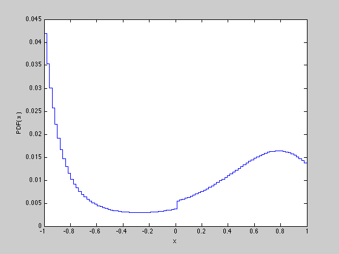
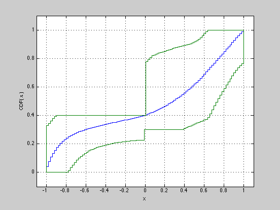

Example 7.2: Maximum entropy distribution
n = 100;
a = linspace(-1,1,n);
a2 = a .^ 2;
a3 = 3 * ( a.^ 3 ) - 2 * a;
ap = +( a < 0 );
A = [ a ; -a ; a2 ; -a2 ; a3 ; -a3 ; ap ; -ap ];
b = [ 0.1 ; 0.1 ;0.5 ; -0.5 ; -0.2 ; 0.3 ; 0.4 ; -0.3 ];
cvx_begin
cvx_gp_precision( 0.001 )
variables z(8) y(100)
dual variable pent
minimize( b' * z + logsumexp_sdp( y ) )
pent : y + A' * z == 0;
z >= 0;
cvx_end
cvxq = cvx_quiet(true);
Ubnds = zeros(1,n);
Lbnds = zeros(1,n);
for t = 1 : n,
cvx_begin
variable p( n )
minimize sum( p(1:t) )
p >= 0; sum( p ) == 1;
A * p <= b;
cvx_end
Lbnds(t) = cvx_optval;
cvx_begin
variable p( n )
maximize sum( p(1:t) )
p >= 0; sum( p ) == 1;
A * p <= b;
cvx_end
Ubnds(t) = cvx_optval;
disp( sprintf( '%g <= Prob(x<=%g) <= %g', Lbnds(t), a(t), Ubnds(t) ) );
end
cvx_quiet(cvxq);
figure( 1 )
stairs( a, pent );
xlabel( 'x' );
ylabel( 'PDF( x )' );
figure( 2 )
stairs( a, cumsum( pent ) );
grid on;
hold on
d = stairs(a, Lbnds,'r-'); set(d,'Color',[0 0.5 0]);
d = stairs(a, Ubnds,'r-'); set(d,'Color',[0 0.5 0]);
d = plot([-1,-1], [Lbnds(1), Ubnds(1)],'r-');
set(d,'Color',[0 0.5 0]);
axis([-1.1 1.1 -0.1 1.1]);
xlabel( 'x' );
ylabel( 'CDF( x )' );
hold off
Calling SDPT3: 1989 variables, 999 equality constraints
Note: for improved efficiency, SDPT3 is solving the dual problem.
------------------------------------------------------------
num. of constraints = 999
dim. of sdp var = 495, num. of sdp blk = 99
dim. of socp var = 198, num. of socp blk = 99
dim. of linear var = 206
dim. of free var = 100 *** convert ublk to lblk
*******************************************************************
SDPT3: Infeasible path-following algorithms
*******************************************************************
version predcorr gam expon scale_data
NT 1 0.000 1 0
it pstep dstep pinfeas dinfeas gap mean(obj) cputime
-------------------------------------------------------------------
0|0.000|0.000|2.2e+02|4.4e+01|1.7e+07| 5.675574e+03| 0:0:00| spchol 1 1
1|0.014|0.009|2.2e+02|4.4e+01|3.9e+06| 8.369113e+03| 0:0:00| spchol 1 1
2|0.204|0.214|1.7e+02|3.5e+01|1.2e+06| 6.958990e+03| 0:0:00| spchol 1 1
3|0.659|0.584|6.0e+01|1.4e+01|3.9e+05| 3.524565e+03| 0:0:00| spchol 1 1
4|0.826|0.848|1.0e+01|2.2e+00|7.0e+04| 2.638386e+03| 0:0:01| spchol 1 1
5|0.854|0.909|1.5e+00|2.0e-01|1.3e+04| 1.906247e+03| 0:0:01| spchol 1 1
6|0.813|0.181|2.8e-01|2.1e-01|5.2e+03| 8.798577e+02| 0:0:01| spchol 1 1
7|0.700|0.584|8.5e-02|8.6e-02|2.2e+03| 3.679646e+02| 0:0:01| spchol 1 1
8|0.902|0.654|8.3e-03|4.4e-02|4.4e+02|-6.859509e+00| 0:0:01| spchol 1 1
9|0.672|0.393|2.7e-03|2.8e-02|2.4e+02|-2.716870e+01| 0:0:01| spchol 1 1
10|0.855|0.560|4.0e-04|1.3e-02|8.7e+01|-2.780356e+01| 0:0:02| spchol 1 1
11|0.710|0.380|1.1e-04|8.1e-03|5.1e+01|-2.161432e+01| 0:0:02| spchol 1 1
12|0.755|0.502|2.8e-05|4.1e-03|2.5e+01|-1.385038e+01| 0:0:02| spchol 1 1
13|0.727|0.396|7.7e-06|2.5e-03|1.5e+01|-1.037550e+01| 0:0:02| spchol 1 2
14|0.587|0.299|3.2e-06|1.7e-03|1.0e+01|-8.631716e+00| 0:0:02| spchol 1 2
15|0.574|0.266|1.4e-06|1.3e-03|7.5e+00|-7.520361e+00| 0:0:02| spchol 1 2
16|0.587|0.327|5.6e-07|8.5e-04|5.1e+00|-6.473244e+00| 0:0:02| spchol 1 2
17|0.653|0.289|1.9e-07|6.1e-04|3.6e+00|-5.856287e+00| 0:0:03| spchol 1 3
18|0.619|0.375|7.4e-08|3.8e-04|2.2e+00|-5.260576e+00| 0:0:03| spchol 1 3
19|0.629|0.225|2.7e-08|2.9e-04|1.7e+00|-5.045643e+00| 0:0:03| spchol 2 3
20|0.721|0.324|7.9e-09|2.0e-04|1.2e+00|-4.797331e+00| 0:0:03| spchol 1 3
21|1.000|0.283|1.2e-09|1.4e-04|8.2e-01|-4.654504e+00| 0:0:03| spchol 2 3
22|1.000|0.389|1.2e-09|8.7e-05|5.0e-01|-4.505818e+00| 0:0:03| spchol 1 3
23|1.000|0.413|5.0e-10|5.1e-05|2.9e-01|-4.409515e+00| 0:0:04| spchol 2 3
24|1.000|0.421|3.4e-10|3.0e-05|1.7e-01|-4.351156e+00| 0:0:04| spchol 1 3
25|1.000|0.353|1.9e-10|1.9e-05|1.1e-01|-4.322955e+00| 0:0:04| spchol 1 2
26|1.000|0.429|1.2e-10|1.1e-05|6.3e-02|-4.300389e+00| 0:0:04| spchol 1 3
27|1.000|0.389|5.0e-11|6.9e-06|3.9e-02|-4.288736e+00| 0:0:04| spchol 1 2
28|1.000|0.936|3.2e-11|3.1e-06|2.9e-03|-4.271264e+00| 0:0:04| spchol 1 3
29|0.822|0.947|4.2e-11|2.4e-07|7.9e-04|-4.270285e+00| 0:0:05| spchol 1 1
30|1.000|0.974|2.2e-11|6.4e-08|1.1e-04|-4.270146e+00| 0:0:05| spchol 1 1
31|1.000|0.976|1.2e-11|8.6e-09|1.3e-05|-4.270127e+00| 0:0:05| spchol 1 1
32|1.000|0.974|1.2e-11|1.0e-09|1.8e-06|-4.270124e+00| 0:0:05| spchol 1 1
33|1.000|0.980|5.2e-12|1.5e-10|1.7e-07|-4.270124e+00| 0:0:05| spchol 1 35
sqlp stop: primal infeas has deteriorated too much, 3.2e-02
34|0.877|0.917|5.2e-12|1.5e-10|1.7e-07|-4.270124e+00| 0:0:05|
-------------------------------------------------------------------
number of iterations = 34
primal objective value = -4.27012394e+00
dual objective value = -4.27012411e+00
gap := trace(XZ) = 1.73e-07
relative gap = 1.82e-08
actual relative gap = 1.79e-08
rel. primal infeas = 5.23e-12
rel. dual infeas = 1.48e-10
norm(X), norm(y), norm(Z) = 2.7e+00, 1.3e+04, 1.3e+04
norm(A), norm(b), norm(C) = 1.4e+03, 3.0e+00, 7.9e+01
Total CPU time (secs) = 5.3
CPU time per iteration = 0.2
termination code = -7
DIMACS: 7.8e-12 0.0e+00 2.0e-09 0.0e+00 1.8e-08 1.8e-08
-------------------------------------------------------------------
------------------------------------------------------------
Status: Inaccurate/Solved
Optimal value (cvx_optval): +4.38821
2.26172e-11 <= Prob(x<=-1) <= 0.329406
2.8871e-11 <= Prob(x<=-0.979798) <= 0.344777
2.25055e-10 <= Prob(x<=-0.959596) <= 0.360771
1.63251e-10 <= Prob(x<=-0.939394) <= 0.377365
9.05118e-12 <= Prob(x<=-0.919192) <= 0.394532
4.78857e-11 <= Prob(x<=-0.89899) <= 0.4
2.63853e-11 <= Prob(x<=-0.878788) <= 0.4
6.29575e-11 <= Prob(x<=-0.858586) <= 0.4
5.85922e-10 <= Prob(x<=-0.838384) <= 0.4
4.11171e-11 <= Prob(x<=-0.818182) <= 0.4
2.53232e-10 <= Prob(x<=-0.79798) <= 0.4
0.0116304 <= Prob(x<=-0.777778) <= 0.4
0.0331953 <= Prob(x<=-0.757576) <= 0.4
0.0519157 <= Prob(x<=-0.737374) <= 0.4
0.0701091 <= Prob(x<=-0.717172) <= 0.4
0.0859495 <= Prob(x<=-0.69697) <= 0.4
0.0998612 <= Prob(x<=-0.676768) <= 0.4
0.112141 <= Prob(x<=-0.656566) <= 0.4
0.123045 <= Prob(x<=-0.636364) <= 0.4
0.132778 <= Prob(x<=-0.616162) <= 0.4
0.141527 <= Prob(x<=-0.59596) <= 0.4
0.149418 <= Prob(x<=-0.575758) <= 0.4
0.15655 <= Prob(x<=-0.555556) <= 0.4
0.163015 <= Prob(x<=-0.535354) <= 0.4
0.168895 <= Prob(x<=-0.515152) <= 0.4
0.174283 <= Prob(x<=-0.494949) <= 0.4
0.179205 <= Prob(x<=-0.474747) <= 0.4
0.18371 <= Prob(x<=-0.454545) <= 0.4
0.187841 <= Prob(x<=-0.434343) <= 0.4
0.191651 <= Prob(x<=-0.414141) <= 0.4
0.195164 <= Prob(x<=-0.393939) <= 0.4
0.198396 <= Prob(x<=-0.373737) <= 0.4
0.201373 <= Prob(x<=-0.353535) <= 0.4
0.204127 <= Prob(x<=-0.333333) <= 0.4
0.206681 <= Prob(x<=-0.313131) <= 0.4
0.209037 <= Prob(x<=-0.292929) <= 0.4
0.211209 <= Prob(x<=-0.272727) <= 0.4
0.213219 <= Prob(x<=-0.252525) <= 0.4
0.215088 <= Prob(x<=-0.232323) <= 0.4
0.216811 <= Prob(x<=-0.212121) <= 0.4
0.218398 <= Prob(x<=-0.191919) <= 0.4
0.219862 <= Prob(x<=-0.171717) <= 0.4
0.221224 <= Prob(x<=-0.151515) <= 0.4
0.222474 <= Prob(x<=-0.131313) <= 0.4
0.223619 <= Prob(x<=-0.111111) <= 0.4
0.224669 <= Prob(x<=-0.0909091) <= 0.4
0.225643 <= Prob(x<=-0.0707071) <= 0.4
0.22653 <= Prob(x<=-0.0505051) <= 0.4
0.227334 <= Prob(x<=-0.030303) <= 0.4
0.3 <= Prob(x<=-0.010101) <= 0.4
0.3 <= Prob(x<=0.010101) <= 0.778942
0.3 <= Prob(x<=0.030303) <= 0.792532
0.3 <= Prob(x<=0.0505051) <= 0.806483
0.3 <= Prob(x<=0.0707071) <= 0.819022
0.3 <= Prob(x<=0.0909091) <= 0.825
0.3 <= Prob(x<=0.111111) <= 0.83125
0.3 <= Prob(x<=0.131313) <= 0.837791
0.3 <= Prob(x<=0.151515) <= 0.841937
0.3 <= Prob(x<=0.171717) <= 0.845957
0.3 <= Prob(x<=0.191919) <= 0.850137
0.3 <= Prob(x<=0.212121) <= 0.854492
0.3 <= Prob(x<=0.232323) <= 0.859052
0.3 <= Prob(x<=0.252525) <= 0.863811
0.3 <= Prob(x<=0.272727) <= 0.868817
0.3 <= Prob(x<=0.292929) <= 0.874066
0.3 <= Prob(x<=0.313131) <= 0.877055
0.3 <= Prob(x<=0.333333) <= 0.880067
0.3 <= Prob(x<=0.353535) <= 0.883272
0.300787 <= Prob(x<=0.373737) <= 0.886687
0.307695 <= Prob(x<=0.393939) <= 0.890333
0.314397 <= Prob(x<=0.414141) <= 0.894234
0.320909 <= Prob(x<=0.434343) <= 0.898418
0.327232 <= Prob(x<=0.454545) <= 0.902981
0.333379 <= Prob(x<=0.474747) <= 0.909013
0.339323 <= Prob(x<=0.494949) <= 0.916606
0.345134 <= Prob(x<=0.515152) <= 0.925292
0.350719 <= Prob(x<=0.535354) <= 0.935184
0.356201 <= Prob(x<=0.555556) <= 0.946304
0.361491 <= Prob(x<=0.575758) <= 0.958921
0.366603 <= Prob(x<=0.59596) <= 0.973265
0.371622 <= Prob(x<=0.616162) <= 0.989508
0.387329 <= Prob(x<=0.636364) <= 1
0.410495 <= Prob(x<=0.656566) <= 1
0.439031 <= Prob(x<=0.676768) <= 1
0.466372 <= Prob(x<=0.69697) <= 1
0.492663 <= Prob(x<=0.717172) <= 1
0.518025 <= Prob(x<=0.737374) <= 1
0.542592 <= Prob(x<=0.757576) <= 1
0.56651 <= Prob(x<=0.777778) <= 1
0.589941 <= Prob(x<=0.79798) <= 1
0.613125 <= Prob(x<=0.818182) <= 1
0.635881 <= Prob(x<=0.838384) <= 1
0.657609 <= Prob(x<=0.858586) <= 1
0.678314 <= Prob(x<=0.878788) <= 1
0.697846 <= Prob(x<=0.89899) <= 1
0.716238 <= Prob(x<=0.919192) <= 1
0.733536 <= Prob(x<=0.939394) <= 1
0.74974 <= Prob(x<=0.959596) <= 1
0.764914 <= Prob(x<=0.979798) <= 1
1 <= Prob(x<=1) <= 1
 